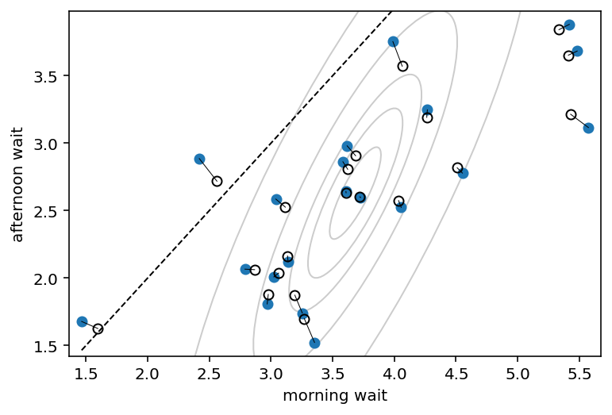

Chapter 14 - Adventures in Covariance
Contents

Chapter 14 - Adventures in Covariance¶
Imports and utility functions¶
# Install packages that are not installed in colab
try:
import google.colab
IN_COLAB = True
except:
IN_COLAB = False
if IN_COLAB:
!pip install -q watermark
%load_ext watermark
# Core
import numpy as np
import arviz as az
import pandas as pd
import xarray as xr
import tensorflow as tf
import tensorflow_probability as tfp
# visualization
import matplotlib.pyplot as plt
from matplotlib.patches import Ellipse, transforms
# aliases
tfd = tfp.distributions
tfb = tfp.bijectors
Root = tfd.JointDistributionCoroutine.Root
2022-01-17 21:36:41.387398: W tensorflow/stream_executor/platform/default/dso_loader.cc:64] Could not load dynamic library 'libcudart.so.11.0'; dlerror: libcudart.so.11.0: cannot open shared object file: No such file or directory
2022-01-17 21:36:41.387437: I tensorflow/stream_executor/cuda/cudart_stub.cc:29] Ignore above cudart dlerror if you do not have a GPU set up on your machine.
%watermark -p numpy,tensorflow,tensorflow_probability,arviz,scipy,pandas
numpy : 1.21.5
tensorflow : 2.7.0
tensorflow_probability: 0.15.0
arviz : 0.11.4
scipy : 1.7.3
pandas : 1.3.5
# config of various plotting libraries
%config InlineBackend.figure_format = 'retina'
Tensorflow MCMC Sampling helpers¶
USE_XLA = False #@param
NUMBER_OF_CHAINS = 2 #@param
NUMBER_OF_BURNIN = 500 #@param
NUMBER_OF_SAMPLES = 500 #@param
NUMBER_OF_LEAPFROG_STEPS = 4 #@param
def _trace_to_arviz(trace=None,
sample_stats=None,
observed_data=None,
prior_predictive=None,
posterior_predictive=None,
inplace=True):
if trace is not None and isinstance(trace, dict):
trace = {k: v.numpy()
for k, v in trace.items()}
if sample_stats is not None and isinstance(sample_stats, dict):
sample_stats = {k: v.numpy().T for k, v in sample_stats.items()}
if prior_predictive is not None and isinstance(prior_predictive, dict):
prior_predictive = {k: v[np.newaxis]
for k, v in prior_predictive.items()}
if posterior_predictive is not None and isinstance(posterior_predictive, dict):
if isinstance(trace, az.InferenceData) and inplace == True:
return trace + az.from_dict(posterior_predictive=posterior_predictive)
else:
trace = None
return az.from_dict(
posterior=trace,
sample_stats=sample_stats,
prior_predictive=prior_predictive,
posterior_predictive=posterior_predictive,
observed_data=observed_data,
)
@tf.function(autograph=False, experimental_compile=USE_XLA)
def run_hmc_chain(init_state,
bijectors,
step_size,
target_log_prob_fn,
num_leapfrog_steps=NUMBER_OF_LEAPFROG_STEPS,
num_samples=NUMBER_OF_SAMPLES,
burnin=NUMBER_OF_BURNIN,
):
def _trace_fn_transitioned(_, pkr):
return (
pkr.inner_results.inner_results.log_accept_ratio
)
hmc_kernel = tfp.mcmc.HamiltonianMonteCarlo(
target_log_prob_fn,
num_leapfrog_steps=num_leapfrog_steps,
step_size=step_size)
inner_kernel = tfp.mcmc.TransformedTransitionKernel(
inner_kernel=hmc_kernel,
bijector=bijectors)
kernel = tfp.mcmc.SimpleStepSizeAdaptation(
inner_kernel=inner_kernel,
target_accept_prob=.8,
num_adaptation_steps=int(0.8*burnin),
log_accept_prob_getter_fn=lambda pkr: pkr.inner_results.log_accept_ratio
)
results, sampler_stat = tfp.mcmc.sample_chain(
num_results=num_samples,
num_burnin_steps=burnin,
current_state=init_state,
kernel=kernel,
trace_fn=_trace_fn_transitioned)
return results, sampler_stat
def sample_posterior(jdc,
observed_data,
params,
init_state=None,
bijectors=None,
step_size = 0.1,
num_chains=NUMBER_OF_CHAINS,
num_samples=NUMBER_OF_SAMPLES,
burnin=NUMBER_OF_BURNIN):
if init_state is None:
init_state = list(jdc.sample(num_chains)[:-1])
if bijectors is None:
bijectors = [tfb.Identity() for i in init_state]
target_log_prob_fn = lambda *x: jdc.log_prob(x + observed_data)
results, sample_stats = run_hmc_chain(init_state,
bijectors,
step_size=step_size,
target_log_prob_fn=target_log_prob_fn,
num_samples=num_samples,
burnin=burnin)
stat_names = ['mean_tree_accept']
sampler_stats = dict(zip(stat_names, [sample_stats]))
transposed_results = []
for r in results:
if len(r.shape) == 2:
transposed_shape = [1,0]
elif len(r.shape) == 3:
transposed_shape = [1,0,2]
else:
transposed_shape = [1,0,2,3]
transposed_results.append(tf.transpose(r, transposed_shape))
posterior = dict(zip(params, transposed_results))
az_trace = _trace_to_arviz(trace=posterior,
sample_stats=sampler_stats)
return posterior, az_trace
Dataset URLs¶
# You could change base url to local dir or a remoate raw github content
_BASE_URL = "https://raw.githubusercontent.com/rmcelreath/rethinking/master/data"
CHIMPANZEE_DATASET_PATH = f"{_BASE_URL}/chimpanzees.csv"
KOSTER_LECKIE_DATASET_PATH = f"{_BASE_URL}/KosterLeckie.csv"
ISLANDS_DISTMATRIX_DATASET_PATH = f"{_BASE_URL}/islandsDistMatrix.csv"
KLINE_DATASET_PATH = f"{_BASE_URL}/Kline2.csv"
PRIMATES301_DATASET_PATH = f"{_BASE_URL}/Primates301.csv"
PRIMATES301_VCOV_DATASET_PATH = f"{_BASE_URL}/Primates301_vcov_matrix.csv"
PRIMATES301_DISTANCE_DATASET_PATH = f"{_BASE_URL}/Primates301_distance_matrix.csv"
Introduction¶
14.1 Varying slopes by construction¶
14.1.1 Simulate the population¶
Code 14.1¶
Simulate the population
a = 3.5 # average morning wait time
b = -1 # average difference afternoon wait time
sigma_a = 1 # std dev in intercepts
sigma_b = 0.5 # std dev in slopes
rho = -0.7 # correlation between intercepts and slopes
Code 14.2¶
Mu = tf.constant([a, b])
2022-01-17 21:36:43.992980: W tensorflow/stream_executor/platform/default/dso_loader.cc:64] Could not load dynamic library 'libcuda.so.1'; dlerror: libcuda.so.1: cannot open shared object file: No such file or directory
2022-01-17 21:36:43.993026: W tensorflow/stream_executor/cuda/cuda_driver.cc:269] failed call to cuInit: UNKNOWN ERROR (303)
2022-01-17 21:36:43.993050: I tensorflow/stream_executor/cuda/cuda_diagnostics.cc:156] kernel driver does not appear to be running on this host (fv-az272-145): /proc/driver/nvidia/version does not exist
2022-01-17 21:36:43.993461: I tensorflow/core/platform/cpu_feature_guard.cc:151] This TensorFlow binary is optimized with oneAPI Deep Neural Network Library (oneDNN) to use the following CPU instructions in performance-critical operations: AVX2 FMA
To enable them in other operations, rebuild TensorFlow with the appropriate compiler flags.
The value in a is the mean intercept, the wait in the morning. And the value in b is the mean slope, the difference in wait between afternoon and morning
Code 14.3¶
cov_ab = sigma_a * sigma_b * rho
Sigma = tf.constant([[sigma_a ** 2, cov_ab], [cov_ab, sigma_b ** 2]])
Code 14.4¶
tf.transpose(tf.reshape(tf.constant([1, 2, 3, 4]), (2, 2)))
<tf.Tensor: shape=(2, 2), dtype=int32, numpy=
array([[1, 3],
[2, 4]], dtype=int32)>
Code 14.5¶
sigmas = tf.constant([sigma_a, sigma_b]) # standard deviations
Rho = tf.constant([[1, rho], [rho, 1]]) # correlation matrix
# now matrix multiply to get covariance matrix
Sigma = tf.linalg.tensor_diag(sigmas) @ Rho @ tf.linalg.tensor_diag(sigmas)
Sigma
<tf.Tensor: shape=(2, 2), dtype=float32, numpy=
array([[ 1. , -0.35],
[-0.35, 0.25]], dtype=float32)>
Code 14.6¶
N_cafes = 20
Code 14.7¶
def build_vary_effects():
_seed = 5
tf.random.set_seed(_seed)
seed = tfp.util.SeedStream(_seed, salt="vary_effects")
Mu = tf.constant([a, b])
vary_effects = tfd.MultivariateNormalTriL(
loc=Mu,
scale_tril=tf.linalg.cholesky(Sigma)).sample((N_cafes,), seed=seed())
return vary_effects
vary_effects = build_vary_effects()
Code 14.8¶
a_cafe = vary_effects[:, 0]
b_cafe = vary_effects[:, 1]
Code 14.9¶
plt.plot(a_cafe, b_cafe, "o", mfc="none")
plt.gca().set(xlabel="intercepts (a_cafe)", ylabel="slopes (b_cafe)")
plt.xlim((1.0,5.5))
plt.ylim((-1.8,-0.25))
# overlay population distribution
# Ref: https://matplotlib.org/gallery/statistics/confidence_ellipse.html
for l in [0.1, 0.3, 0.5, 0.8, 0.99]:
pearson = Sigma[0, 1] / np.sqrt(Sigma[0, 0] * Sigma[1, 1])
ellipse = Ellipse((0, 0), np.sqrt(1 + pearson), np.sqrt(1 - pearson),
edgecolor="k", alpha=0.2, facecolor="none")
std_dev = tfd.Normal(loc=0.,scale=1.).quantile((1 + np.sqrt(l)) / 2)
scale_x = 2 * std_dev * np.sqrt(Sigma[0, 0])
scale_y = 2 * std_dev * np.sqrt(Sigma[1, 1])
scale = transforms.Affine2D().rotate_deg(45).scale(scale_x, scale_y)
ellipse.set_transform(scale.translate(Mu[0], Mu[1]) + plt.gca().transData)
plt.gca().add_patch(ellipse)
14.1.2 Simulate observations¶
Code 14.10¶
The data we’re generating describes the waiting times in 20 different cafés. Each café has a different average waiting times in the morning and in the afternoon. The average morning waiting time is the intercept, and the difference between afternoon and morning average waiting times is the slope.
N_visits = 10
afternoon = np.tile(np.arange(2), N_visits * N_cafes // 2)
cafe_id = np.repeat(np.arange(N_cafes), N_visits)
def generate_data_frame():
sigma = 0.5 # std dev within cafes
_seed = 22
tf.random.set_seed(_seed)
seed = tfp.util.SeedStream(_seed, salt="generate_data_frame")
mu = tf.gather(a_cafe, cafe_id) + tf.gather(b_cafe, cafe_id) * afternoon
wait = tfd.Normal(loc=mu, scale=sigma).sample(seed=seed())
d = pd.DataFrame(dict(cafe=cafe_id, afternoon=afternoon, wait=wait))
return d
d = generate_data_frame()
d.describe()
| cafe | afternoon | wait | |
|---|---|---|---|
| count | 200.000000 | 200.000000 | 200.000000 |
| mean | 9.500000 | 0.500000 | 3.145164 |
| std | 5.780751 | 0.501255 | 1.103819 |
| min | 0.000000 | 0.000000 | 0.627383 |
| 25% | 4.750000 | 0.000000 | 2.435770 |
| 50% | 9.500000 | 0.500000 | 3.129436 |
| 75% | 14.250000 | 1.000000 | 3.787630 |
| max | 19.000000 | 1.000000 | 6.477736 |
14.1.3 The vaying slopes model¶
Code 14.11¶
R = tfp.distributions.LKJ(dimension=2, concentration=2).sample((int(1e4),))
az.plot_kde(R[:, 0, 1].numpy(), bw=2, label="correlation");

R.shape
TensorShape([10000, 2, 2])
Code 14.12¶
def model_14_1(cafe, afternoon):
def _generator():
alpha = yield Root(tfd.Sample(tfd.Normal(loc=5.,scale=2.), sample_shape=1))
beta = yield Root(tfd.Sample(tfd.Normal(loc=-1., scale=0.5), sample_shape=1))
# sigma = yield Root(tfd.Sample(tfd.HalfCauchy(loc=0., scale=1.), sample_shape=1))
# sigma_alpha_beta = yield Root(tfd.Sample(tfd.HalfCauchy(loc=0., scale=1.), sample_shape=2))
sigma = yield Root(tfd.Sample(tfd.Exponential(rate=1.), sample_shape=1))
sigma_alpha_beta = yield Root(tfd.Sample(tfd.Exponential(rate=1.), sample_shape=2))
# Rho = yield Root(tfd.Sample(tfd.LKJ(dimension=2, concentration=2.), sample_shape=1))
Rho = yield Root(tfd.LKJ(dimension=2, concentration=2.))
Mu = tf.concat([alpha, beta], axis=-1)
scale = tf.linalg.LinearOperatorDiag(sigma_alpha_beta).matmul(tf.squeeze(Rho))
a_cafe_b_cafe = yield tfd.Sample(
tfd.MultivariateNormalTriL(
loc = Mu,
scale_tril = scale
),sample_shape=20)
# extract the alphas and betas
a_cafe = tf.gather(a_cafe_b_cafe, 0, axis=-1)
b_cafe = tf.gather(a_cafe_b_cafe, 1, axis=-1)
# extract alphas and beta using the cafe id as the index
term1 = tf.gather(a_cafe, cafe, axis=-1)
term2 = tf.gather(b_cafe, cafe, axis=-1)
# linear model
mu = term1 + term2 * afternoon
wait = yield tfd.Independent(tfd.Normal(loc=mu, scale=sigma), reinterpreted_batch_ndims=1)
return tfd.JointDistributionCoroutine(_generator, validate_args=False)
jdc_14_1 = model_14_1(tf.cast(d.cafe.values, dtype=tf.int32), tf.cast(d.afternoon.values, dtype=tf.float32))
alpha_init, beta_init, sigma_init, sigma_alpha_beta_init, Rho_init, a_cafe_b_cafe_init, _ = jdc_14_1.sample(2)
# let's see Rho and make sure that what we have
# looks like a correlation matrix as a sanity check
#
# Now this will a prior sample so most likely
# we will get the correct sample however when we will do HMC
# we maybe extra care
# alpha_init, beta_init, sigma_init, sigma_alpha_beta_init, Rho_init, a_cafe_b_cafe_init
Rho_init
WARNING:tensorflow:@custom_gradient grad_fn has 'variables' in signature, but no ResourceVariables were used on the forward pass.
WARNING:tensorflow:@custom_gradient grad_fn has 'variables' in signature, but no ResourceVariables were used on the forward pass.
<tf.Tensor: shape=(2, 2, 2), dtype=float32, numpy=
array([[[ 1. , 0.1601274 ],
[ 0.1601274 , 1. ]],
[[ 1. , -0.06374174],
[-0.06374174, 1. ]]], dtype=float32)>
init_rho = tf.stack([tf.eye(2) for _ in range(2)])
init_rho
<tf.Tensor: shape=(2, 2, 2), dtype=float32, numpy=
array([[[1., 0.],
[0., 1.]],
[[1., 0.],
[0., 1.]]], dtype=float32)>
init_state = [
alpha_init,
beta_init,
sigma_init,
sigma_alpha_beta_init,
init_rho,
a_cafe_b_cafe_init
]
bijectors = [
tfb.Identity(), # alpha
tfb.Identity(), # beta
tfb.Identity(), # sigma
tfb.Identity(), # sigma_alpha_beta
tfb.CorrelationCholesky(), # Rho
tfb.Identity(), # a_cafe_b_cafe
]
observed_data = (tf.cast(d.wait.values, dtype=tf.float32),)
posterior_14_1, trace_14_1 = sample_posterior(
jdc_14_1,
observed_data=observed_data,
params=['alpha', 'beta', 'sigma', 'sigma_alpha_beta', 'Rho', 'a_cafe_b_cafe'],
num_samples=4000,
burnin=2000,
init_state=init_state,
bijectors=bijectors)
WARNING:tensorflow:@custom_gradient grad_fn has 'variables' in signature, but no ResourceVariables were used on the forward pass.
WARNING:tensorflow:@custom_gradient grad_fn has 'variables' in signature, but no ResourceVariables were used on the forward pass.
WARNING:tensorflow:@custom_gradient grad_fn has 'variables' in signature, but no ResourceVariables were used on the forward pass.
WARNING:tensorflow:@custom_gradient grad_fn has 'variables' in signature, but no ResourceVariables were used on the forward pass.
WARNING:tensorflow:@custom_gradient grad_fn has 'variables' in signature, but no ResourceVariables were used on the forward pass.
WARNING:tensorflow:@custom_gradient grad_fn has 'variables' in signature, but no ResourceVariables were used on the forward pass.
Code 14.13¶
post = trace_14_1.posterior
# Here comes the important part !
#
# The posterior that we get is not really Rho because of the bijector
# that we used. Hence we need to get the correlation matrix back (i.e. Rho)
states = post["Rho"].values
rhos = states @ tf.transpose(states,[0,1,3,2])
# let's look at the rhos
# we should see that it will be a collection of 2x2 matrices such that on diagnoal you would
# see the ones
rhos
<tf.Tensor: shape=(2, 4000, 2, 2), dtype=float32, numpy=
array([[[[ 1. , -0.5191445 ],
[-0.5191445 , 0.9999999 ]],
[[ 1. , -0.44894338],
[-0.44894338, 0.9999999 ]],
[[ 1. , -0.57372105],
[-0.57372105, 0.9999999 ]],
...,
[[ 1. , -0.87136114],
[-0.87136114, 1. ]],
[[ 1. , -0.8623171 ],
[-0.8623171 , 1. ]],
[[ 1. , -0.86074287],
[-0.86074287, 1. ]]],
[[[ 1. , -0.60459495],
[-0.60459495, 1. ]],
[[ 1. , -0.592773 ],
[-0.592773 , 1. ]],
[[ 1. , -0.69023496],
[-0.69023496, 0.9999999 ]],
...,
[[ 1. , -0.7170182 ],
[-0.7170182 , 1.0000001 ]],
[[ 1. , -0.4906618 ],
[-0.4906618 , 1. ]],
[[ 1. , -0.5256052 ],
[-0.5256052 , 1. ]]]], dtype=float32)>
rhos[0]
<tf.Tensor: shape=(4000, 2, 2), dtype=float32, numpy=
array([[[ 1. , -0.5191445 ],
[-0.5191445 , 0.9999999 ]],
[[ 1. , -0.44894338],
[-0.44894338, 0.9999999 ]],
[[ 1. , -0.57372105],
[-0.57372105, 0.9999999 ]],
...,
[[ 1. , -0.87136114],
[-0.87136114, 1. ]],
[[ 1. , -0.8623171 ],
[-0.8623171 , 1. ]],
[[ 1. , -0.86074287],
[-0.86074287, 1. ]]], dtype=float32)>
rhos[1][:,0,1]
<tf.Tensor: shape=(4000,), dtype=float32, numpy=
array([-0.60459495, -0.592773 , -0.69023496, ..., -0.7170182 ,
-0.4906618 , -0.5256052 ], dtype=float32)>
az.plot_kde(rhos[1][:,0,1], bw=2);
---------------------------------------------------------------------------
AttributeError Traceback (most recent call last)
/tmp/ipykernel_2439/3075958100.py in <module>
----> 1 az.plot_kde(rhos[1][:,0,1], bw=2);
/opt/hostedtoolcache/Python/3.7.12/x64/lib/python3.7/site-packages/arviz/plots/kdeplot.py in plot_kde(values, values2, cumulative, rug, label, bw, adaptive, quantiles, rotated, contour, hdi_probs, fill_last, figsize, textsize, plot_kwargs, fill_kwargs, rug_kwargs, contour_kwargs, contourf_kwargs, pcolormesh_kwargs, is_circular, ax, legend, backend, backend_kwargs, show, return_glyph, **kwargs)
259 bw = "experimental"
260
--> 261 grid, density = kde(values, is_circular, bw=bw, adaptive=adaptive, cumulative=cumulative)
262 lower, upper = grid[0], grid[-1]
263
/opt/hostedtoolcache/Python/3.7.12/x64/lib/python3.7/site-packages/arviz/stats/density_utils.py in kde(x, circular, **kwargs)
478 """
479 x = x[np.isfinite(x)]
--> 480 if x.size == 0 or np.all(x == x[0]):
481 warnings.warn("Your data appears to have a single value or no finite values")
482
/opt/hostedtoolcache/Python/3.7.12/x64/lib/python3.7/site-packages/tensorflow/python/framework/ops.py in __getattr__(self, name)
439 If you are looking for numpy-related methods, please run the following:
440 from tensorflow.python.ops.numpy_ops import np_config
--> 441 np_config.enable_numpy_behavior()""".format(type(self).__name__, name))
442 self.__getattribute__(name)
443
AttributeError:
'EagerTensor' object has no attribute 'size'.
If you are looking for numpy-related methods, please run the following:
from tensorflow.python.ops.numpy_ops import np_config
np_config.enable_numpy_behavior()
Code 14.14¶
a1 = np.array([np.mean(d.wait[(cafe_id == i) & (afternoon == 0)])
for i in range(N_cafes)])
b1 = np.array([np.mean(d.wait[(cafe_id == i) & (afternoon == 1)])
for i in range(N_cafes)]) - a1
# extract posterior means of partially pooled estimates
a2 = np.mean(post["a_cafe_b_cafe"].values[0][..., 0], 0)
b2 = np.mean(post["a_cafe_b_cafe"].values[0][..., 1], 0)
# plot both and connect with lines
plt.plot(a1, b1, "o")
plt.gca().set(xlabel="intercept", ylabel="slope",
ylim=(np.min(b1) - 0.1, np.max(b1) + 0.1),
xlim=(np.min(a1) - 0.1, np.max(a1) + 0.1))
plt.plot(a2, b2, "ko", mfc="none")
for i in range(N_cafes):
plt.plot([a1[i], a2[i]], [b1[i], b2[i]], "k", lw=0.5)
fig, ax = plt.gcf(), plt.gca()

Code 14.15¶
# compute posterior mean bivariate Gaussian
Mu_est = np.array([np.mean(post["alpha"].values[0]), np.mean(post["beta"].values[0])])
rho_est = np.mean(post["Rho"][0, 1])
sa_est = np.mean(post["sigma"][:, 0])
sb_est = np.mean(post["sigma"][:, 1])
cov_ab = sa_est * sb_est * rho_est
Sigma_est = np.array([[sa_est ** 2, cov_ab], [cov_ab, sb_est ** 2]])
# draw contours
for l in [0.1, 0.3, 0.5, 0.8, 0.99]:
pearson = Sigma_est[0, 1] / np.sqrt(Sigma_est[0, 0] * Sigma_est[1, 1])
ellipse = Ellipse((0, 0), np.sqrt(1 + pearson), np.sqrt(1 - pearson),
edgecolor="k", alpha=0.2, facecolor="none")
std_dev = tfd.Normal(loc=0.,scale=1.).quantile((1 + np.sqrt(l)) / 2)
scale_x = 2 * std_dev * np.sqrt(Sigma_est[0, 0])
scale_y = 2 * std_dev * np.sqrt(Sigma_est[1, 1])
scale = transforms.Affine2D().rotate_deg(45).scale(scale_x, scale_y)
ellipse.set_transform(scale.translate(Mu_est[0], Mu_est[1]) + ax.transData)
ax.add_patch(ellipse)
fig

Code 14.16¶
# convert varying effects to waiting times
wait_morning_1 = a1
wait_afternoon_1 = a1 + b1
wait_morning_2 = a2
wait_afternoon_2 = a2 + b2
# plot both and connect with lines
plt.plot(wait_morning_1, wait_afternoon_1, "o")
plt.gca().set(
xlabel="morning wait", ylabel="afternoon wait",
ylim=(np.min(wait_afternoon_1) - 0.1, np.max(wait_afternoon_1) + 0.1),
xlim=(np.min(wait_morning_1) - 0.1, np.max(wait_morning_1) + 0.1))
plt.plot(wait_morning_2, wait_afternoon_2, "ko", mfc="none")
for i in range(N_cafes):
plt.plot([wait_morning_1[i], wait_morning_2[i]],
[wait_afternoon_1[i], wait_afternoon_2[i]], "k", lw=0.5)
x = np.linspace(np.min(wait_morning_1), np.max(wait_morning_1), 101)
plt.plot(x, x, "k--", lw=1)
fig, ax = plt.gcf(), plt.gca()

Code 14.17¶
# now shrinkage distribution by simulation
v = tfd.MultivariateNormalTriL(loc=Mu_est, scale_tril=tf.linalg.cholesky(Sigma_est)).sample((10000,)).numpy()
v[:,1] = v[:,0] + v[:,1] # calculate afternoon wait
Sigma_est2 = np.cov(v, rowvar=False)
Mu_est2 = Mu_est
Mu_est2[1] = Mu_est2[0] + Mu_est2[1]
# draw contours
for l in [0.1, 0.3, 0.5, 0.8, 0.99]:
pearson = Sigma_est2[0, 1] / np.sqrt(Sigma_est2[0, 0] * Sigma_est2[1, 1])
ellipse = Ellipse((0, 0), np.sqrt(1 + pearson), np.sqrt(1 - pearson),
edgecolor="k", alpha=0.2, facecolor="none")
std_dev = tfd.Normal(loc=0.,scale=1.).quantile((1 + np.sqrt(l)) / 2)
scale_x = 2 * std_dev * np.sqrt(Sigma_est2[0, 0])
scale_y = 2 * std_dev * np.sqrt(Sigma_est2[1, 1])
scale = transforms.Affine2D().rotate_deg(45).scale(scale_x, scale_y)
ellipse.set_transform(
scale.translate(Mu_est2[0], Mu_est2[1]) + ax.transData)
ax.add_patch(ellipse)
fig

14.2 Advanced varying slopes¶
Code 14.18¶
d = pd.read_csv(CHIMPANZEE_DATASET_PATH, sep=";")
d["block_id"] = d.block
d["treatment"] = 1 + d.prosoc_left + 2 * d.condition
dat = dict(L=d.pulled_left.values, tid=d.treatment.values - 1,
actor=d.actor.values - 1, block_id=d.block_id.values - 1)
# actor 0 to 6 => 7
# tid 0 to 3 => 4
def model_14_2(tid, actor, block_id, num_chains):
# we need to create the indexes that make
# gather_nd happy
actor_tid = tf.stack([actor, tid], axis=1)
block_tid = tf.stack([block_id, tid], axis=1)
batch_dims = 0
if num_chains > 1:
actor_tid_tiled = tf.tile(actor_tid, (num_chains, 1))
actor_tid_reshaped = tf.reshape(actor_tid_tiled, (num_chains, 504, 2))
actor_tid = actor_tid_reshaped
block_tid_tiled = tf.tile(block_tid, (num_chains, 1))
block_tid_reshaped = tf.reshape(block_tid_tiled, (num_chains, 504, 2))
block_tid = block_tid_reshaped
batch_dims = 1
def _generator():
# fixed priors
g = yield Root(tfd.Sample(tfd.Normal(loc=0., scale=1.), sample_shape=4))
sigma_actor = yield Root(tfd.Sample(tfd.Exponential(rate=1.), sample_shape=4))
# note - not using Sample as it does not work with it
rho_actor = yield Root(tfp.distributions.LKJ(dimension=4, concentration=4.))
sigma_block = yield Root(tfd.Sample(tfd.Exponential(rate=1.), sample_shape=4))
# note - not using Sample as it does not work with it
rho_block = yield Root(tfp.distributions.LKJ(dimension=4, concentration=4.))
# adaptive priors
alpha = yield tfd.Sample(
tfd.MultivariateNormalTriL(
loc = 0.,
scale_tril = tf.linalg.LinearOperatorDiag(sigma_actor).matmul(rho_actor)
),sample_shape=7)
beta = yield tfd.Sample(
tfd.MultivariateNormalTriL(
loc = 0.,
scale_tril = tf.linalg.LinearOperatorDiag(sigma_block).matmul(rho_block)
),sample_shape=6)
print(alpha.shape)
term1 = tf.gather(g, tid, axis=-1)
term2 = tf.gather_nd(alpha, actor_tid, batch_dims=batch_dims)
term3 = tf.gather_nd(alpha, block_tid, batch_dims=batch_dims)
logit_p = term1 + term2 + term3
L = yield tfd.Independent(tfd.Binomial(total_count=1, logits=logit_p), reinterpreted_batch_ndims=1)
return tfd.JointDistributionCoroutine(_generator, validate_args=False)
jdc_14_2 = model_14_2(dat["tid"], dat["actor"], dat["block_id"], num_chains=1)
jdc_14_2.sample()
WARNING:tensorflow:@custom_gradient grad_fn has 'variables' in signature, but no ResourceVariables were used on the forward pass.
WARNING:tensorflow:@custom_gradient grad_fn has 'variables' in signature, but no ResourceVariables were used on the forward pass.
WARNING:tensorflow:@custom_gradient grad_fn has 'variables' in signature, but no ResourceVariables were used on the forward pass.
WARNING:tensorflow:@custom_gradient grad_fn has 'variables' in signature, but no ResourceVariables were used on the forward pass.
(7, 4)
(7, 4)
StructTuple(
var0=<tf.Tensor: shape=(4,), dtype=float32, numpy=array([-0.5014254 , 0.74232 , 0.4499971 , 0.76490015], dtype=float32)>,
var1=<tf.Tensor: shape=(4,), dtype=float32, numpy=array([0.31832603, 0.47213277, 0.28802052, 5.721535 ], dtype=float32)>,
var2=<tf.Tensor: shape=(4, 4), dtype=float32, numpy=
array([[ 1. , 0.04274065, 0.21720065, 0.3427556 ],
[ 0.04274065, 1. , 0.13831937, -0.1113151 ],
[ 0.21720065, 0.13831937, 1. , 0.4894933 ],
[ 0.3427556 , -0.1113151 , 0.4894933 , 1. ]],
dtype=float32)>,
var3=<tf.Tensor: shape=(4,), dtype=float32, numpy=array([0.00137686, 0.28870302, 1.2713518 , 0.75674313], dtype=float32)>,
var4=<tf.Tensor: shape=(4, 4), dtype=float32, numpy=
array([[ 1. , -0.6184058 , -0.32602987, 0.147812 ],
[-0.6184058 , 1. , 0.20703457, 0.06719287],
[-0.32602987, 0.20703457, 1. , -0.3049771 ],
[ 0.147812 , 0.06719287, -0.3049771 , 1. ]],
dtype=float32)>,
var5=<tf.Tensor: shape=(7, 4), dtype=float32, numpy=
array([[ 0.6302743 , -0.5363723 , -0.07518335, 15.145892 ],
[ 0.11294036, -0.15341198, 0.5445305 , 10.76273 ],
[-0.14775464, -0.19655983, 0.25711694, -0.5218694 ],
[ 0.37437737, 0.26977664, 0.15452878, -0.30596495],
[-0.18130596, 0.32749844, -0.26742986, -3.6027462 ],
[ 0.8370365 , 0.3294301 , 0.15910186, 13.008111 ],
[-0.20101161, -0.30880588, -0.15883592, -8.388695 ]],
dtype=float32)>,
var6=<tf.Tensor: shape=(6, 4), dtype=float32, numpy=
array([[-6.1072106e-04, -3.1334347e-01, -1.7209022e+00, 9.8799431e-01],
[ 2.5450452e-03, -5.9288430e-01, -2.1505771e+00, 1.0472307e+00],
[ 2.8115786e-03, -3.6377683e-01, -1.3972664e+00, 4.4514343e-01],
[ 3.7121904e-04, 7.6736458e-02, 1.7643657e-01, -1.1165903e+00],
[-8.3132523e-05, -2.1002574e-01, 1.0349289e+00, -2.0302877e-02],
[-5.3229812e-04, 1.5425898e-02, -5.7022110e-02, -6.0530847e-01]],
dtype=float32)>,
var7=<tf.Tensor: shape=(504,), dtype=float32, numpy=
array([1., 1., 0., 1., 0., 0., 1., 0., 1., 1., 1., 0., 1., 0., 1., 0., 0.,
0., 0., 1., 1., 1., 0., 1., 1., 1., 0., 0., 0., 1., 0., 0., 1., 1.,
1., 0., 1., 1., 1., 0., 1., 0., 1., 0., 1., 1., 1., 1., 1., 0., 1.,
1., 1., 1., 1., 1., 1., 1., 1., 1., 1., 1., 1., 0., 1., 1., 1., 1.,
1., 1., 1., 0., 1., 1., 1., 0., 1., 1., 1., 1., 0., 0., 0., 0., 1.,
0., 1., 1., 1., 0., 1., 0., 0., 0., 1., 1., 0., 1., 0., 1., 1., 1.,
1., 1., 0., 1., 1., 0., 1., 1., 1., 1., 0., 0., 1., 1., 1., 1., 1.,
1., 1., 1., 1., 0., 1., 1., 1., 1., 1., 1., 1., 1., 1., 1., 1., 1.,
1., 1., 1., 1., 0., 1., 0., 1., 0., 0., 0., 0., 1., 1., 1., 0., 0.,
0., 0., 0., 1., 0., 0., 0., 0., 0., 1., 0., 0., 1., 1., 0., 0., 0.,
1., 0., 1., 1., 0., 0., 0., 0., 0., 1., 1., 1., 1., 1., 1., 1., 1.,
1., 1., 1., 1., 1., 0., 0., 1., 1., 0., 1., 0., 1., 1., 1., 0., 1.,
0., 0., 1., 0., 0., 1., 1., 1., 1., 1., 0., 1., 0., 0., 1., 1., 1.,
0., 0., 1., 0., 0., 0., 1., 0., 1., 1., 1., 1., 0., 0., 1., 0., 1.,
0., 1., 1., 1., 0., 0., 1., 0., 1., 1., 1., 1., 0., 1., 1., 0., 1.,
1., 1., 1., 1., 1., 1., 1., 1., 1., 1., 0., 0., 1., 0., 1., 0., 0.,
1., 0., 1., 1., 0., 1., 0., 0., 0., 0., 1., 0., 0., 1., 1., 0., 1.,
0., 1., 1., 1., 1., 0., 0., 1., 0., 0., 1., 0., 1., 0., 1., 0., 0.,
1., 1., 0., 1., 0., 1., 0., 0., 1., 0., 1., 0., 1., 0., 1., 0., 0.,
1., 1., 1., 1., 0., 0., 1., 1., 1., 0., 1., 0., 1., 0., 1., 0., 1.,
0., 0., 0., 0., 1., 1., 0., 0., 1., 0., 0., 0., 0., 0., 1., 1., 0.,
0., 1., 1., 1., 1., 1., 1., 0., 1., 1., 1., 0., 1., 0., 1., 0., 0.,
1., 1., 1., 1., 0., 1., 1., 0., 0., 1., 1., 0., 0., 0., 1., 0., 1.,
1., 1., 1., 1., 0., 1., 1., 1., 1., 0., 0., 1., 1., 1., 1., 1., 1.,
1., 1., 1., 1., 0., 1., 1., 1., 1., 1., 0., 1., 1., 1., 1., 0., 1.,
1., 0., 1., 1., 1., 1., 0., 1., 1., 0., 1., 0., 0., 1., 1., 0., 1.,
0., 1., 1., 1., 0., 1., 0., 1., 0., 1., 0., 1., 1., 1., 0., 0., 0.,
1., 0., 0., 0., 0., 1., 1., 1., 1., 1., 0., 1., 1., 1., 1., 1., 0.,
1., 0., 1., 1., 1., 0., 0., 0., 1., 0., 1., 0., 0., 1., 0., 0., 0.,
1., 0., 0., 0., 0., 1., 1., 1., 1., 0., 1.], dtype=float32)>
)
g_init, sigma_actor_init, rho_actor_init, sigma_block_init, rho_block_init, alpha_init, beta_init, _ = jdc_14_2.sample()
(7, 4)
init_state = [
g_init,
sigma_actor_init,
rho_actor_init,
sigma_block_init,
rho_block_init,
alpha_init,
beta_init,
]
bijectors = [
tfb.Identity(),
tfb.Exp(),
tfb.CorrelationCholesky(),
tfb.Exp(),
tfb.CorrelationCholesky(),
tfb.Identity(),
tfb.Identity()
]
observed_data = (tf.cast(dat["L"], dtype=tf.float32),)
# Issue:
# This used to work
# posterior_14_2, trace_14_2 = sample_posterior(
# jdc_14_2,
# observed_data=observed_data,
# params=['g', 'sigma_actor', 'rho_actor', 'sigma_block', 'rho_block', 'alpha', 'beta'],
# num_samples=2000,
# burnin=500,
# init_state=init_state,
# bijectors=bijectors)
What is happening is that arviz assigns 7 to the chain dimension and this screws up the entire structure in xarray. Really arviz does not work if there is 1 chain.
Now I have problem using 2 chains so that is the real problem indeed !
# az.summary(trace_14_2)
14.4 Social relations as correlated varying effects (TODO)¶